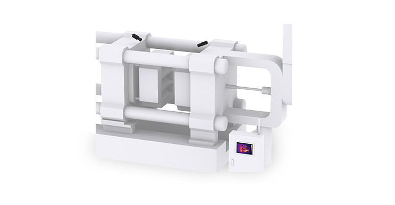
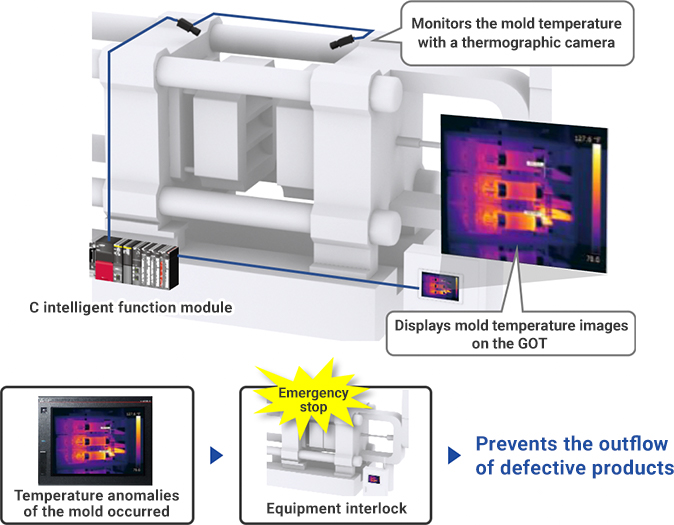
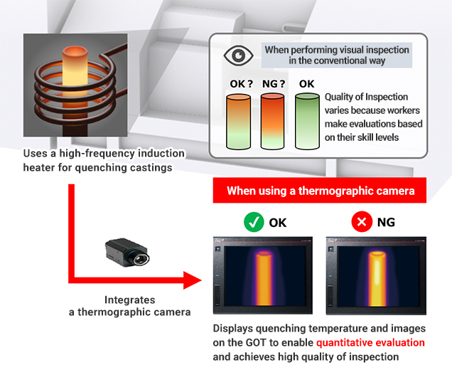
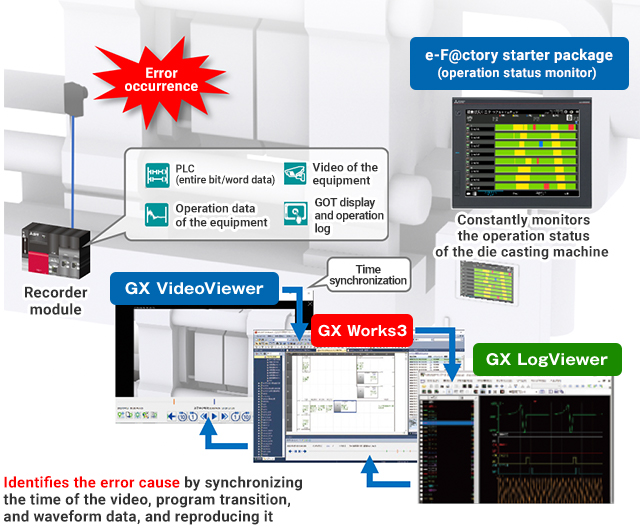

Solusi
Manufaktur Otomotif

Pengecoran
- Memantau suhu cetakan dengan kamera termografis
- Memeriksa proses pendinginan dengan kamera termografis
- Mengidentifikasi penyebab sesegera mungkin ketika terjadi kesalahan pada mesin die casting

Solusi untuk Masalah
| Masalah | Solusi |
|---|---|
| Memantau suhu cetakan dengan kamera termografis | Pantau dengan kamera termografis. |
| Memeriksa proses pendinginan dengan kamera termografis | Pantau suhu dan warna emisi selama pendinginan dengan kamera termografis. |
| Mengidentifikasi penyebab sesegera mungkin ketika terjadi kesalahan pada mesin die casting | Rekam semua data status operasi dengan sistem perekam. |
Masalah
Memantau suhu cetakan dengan kamera termografis
Solusi
Gunakan kamera termografi untuk memantau secara konstan apakah cetakan dijaga pada suhu tertentu guna mencegah pengecoran retak akibat suhu cetakan rendah, sehingga meningkatkan kualitas pengecoran.
- Kualitas pengecoran ditingkatkan dengan menampilkan data suhu yang terdeteksi oleh kamera termografis sebagai gambar pseudo-color pada GOT, memungkinkan visualisasi.
- 128 area pemantauan suhu dapat diatur. Data seperti suhu rata-rata area dan lokasi titik terpanas/terdingin dikeluarkan.
Poin
- Perekaman dengan kamera termografis memungkinkan pengukuran suhu objek yang tidak dapat dipasangi termometer.
- Modul fungsi cerdas MELSEC iQ-R series C dapat langsung terhubung ke kamera termografis melalui switching hub, mempermudah integrasi termografi inframerah.

Daftar Produk

Masalah
Memeriksa proses pendinginan dengan kamera termografis
Solusi
Pantau suhu pendinginan dan warna emisi dengan kamera termografis untuk menghilangkan variasi kualitas yang diakibatkan oleh perbedaan tingkat keterampilan pekerja selama inspeksi pendinginan untuk poros, memungkinkan pekerja mengevaluasi produk secara kuantitatif.
- Integrasi kamera termografis memungkinkan operasi otomatis dan evaluasi kuantitatif kualitas serta mencegah variasi kualitas.
- MELSEC iQ-R series dapat langsung terhubung ke kamera termografis melalui switching hub.
Poin
- Satu kamera termografis secara akurat mengukur suhu di beberapa lokasi, membuat keputusan lulus/gagal berdasarkan informasi suhu, memungkinkan inspeksi otomatis.
- Gambar distribusi suhu ditampilkan pada GOT, memungkinkan lokasi abnormal terdeteksi secara visual.

Daftar Produk

Masalah
Mengidentifikasi penyebab sesegera mungkin ketika terjadi kesalahan pada mesin die casting
Solusi
Pantau peralatan secara real time dengan monitor status operasi. Identifikasi penyebab segera dan kurangi waktu henti dengan sistem perekam yang mencatat seluruh catatan data log, video peralatan, dan log operasi layar.
- Sistem perekam adalah solusi pasca-pemeliharaan yang secara signifikan mengurangi waktu henti mesin melalui "perekaman lengkap" dan "analisis mudah" dari status operasi sistem saat terjadi kesalahan.
- Data operasi yang dikumpulkan oleh PLC seperti sinyal operasi, sinyal berhenti, dan sinyal non-berhenti dipantau, dan divisualisasikan sebagai grafik deret waktu.
Poin
- Akumulasi grafik memungkinkan perbandingan status operasi sebelum dan sesudah perbaikan.
- Penyebab kesalahan diidentifikasi dengan menyinkronkan waktu video, transisi program, dan data bentuk gelombang, serta mereproduksinya.
